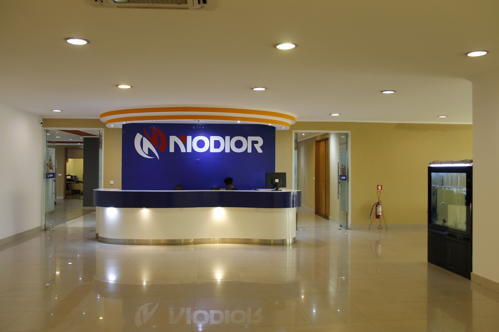

Profissionalismo · Qualidade · Serviço
NIODIOR O Grupo INTERNACIONAL é um conglomerado internacional diversificado com as suas principais atividades localizadas em Angola.
Fundado em Angola em 2003, o grupo expandiu-se ao longo de quase 20 anos, passando do seu foco inicial no comércio internacional de motociclos para incluir a venda de automóveis, o comércio agrícola e alimentar, o fabrico de motociclos, o investimento financeiro, o equipamento médico e a pesca em alto mar, entre outros sectores.
O grupo já concluiu a construção da sua sede própria em Viana, Luanda, com uma área superior a 20.000 metros quadrados.
